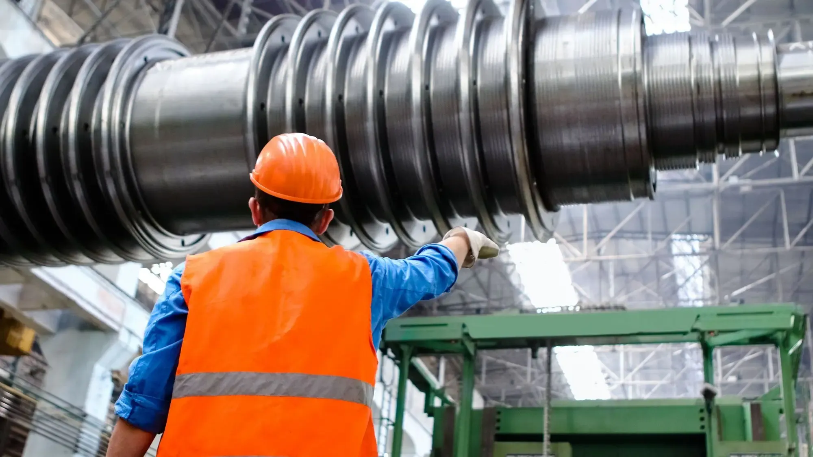

Your equipment has a pattern. Understand when it changes.
Go beyond individual readings. We analyse sensor behaviour together to detect anomalies, assess likely developing faults and give maintenance teams a clearer starting point.
See sensor signals become an insight
Pick an asset, then simulate a developing fault to watch the signals change together and the diagnostic insight appear.
P-204 · Process pump
Sensor stream running
Solid line: observed signal. Dashed line: operating baseline. Latest readings at right.
Normal operating pattern
Measurements follow the baseline.
Run a developing-fault example to see how the signals change together.
No alert in this example.
Interactive capability demonstration. All readings, anomalies, diagnoses and notifications are simulated. Real analysis depends on equipment, instrumentation, data quality and operating context.
A pattern is more than a threshold
One value may look normal. The relationship can tell another story. Equipment behaviour changes with load and operating conditions, so analysing measurements together helps tell an unusual pattern from a single isolated reading.
- 0101Observe the signals
- 0202Recognise the change
- 0303Assess likely causes
- 0404Inform the team
From anomaly to diagnostic insight
An unusual trend is the beginning of the question. We assess the sensor evidence and likely causes so the maintenance team can decide what to investigate next.
- 01
What changed?
Identify the measurements that depart from an appropriate operating baseline.
- 02
What might explain it?
Assess patterns consistent with likely developing faults, using the signals and operating context available.
- 03
Who needs to know?
Surface the observation and supporting evidence in a dashboard and notify the designated contact.

Different assets. Different signals. One objective.
Understand behaviour early enough to support a more informed maintenance investigation.
- 01
Rotating equipment
Pumps, compressors, motors and fans. Analyse available vibration, electrical, temperature and process signals.
- 02
Heat-transfer systems
Heat exchangers and cooling systems. Relate thermal performance to flow, pressure drop and operating load.
- 03
Process equipment
Assess instrumented equipment through its relevant measurements and expected behaviour.
- 04
Supporting utilities
Extend monitoring to instrumented valves, steam systems and other assets where diagnostic data is available.
Fit intelligence around your operation
Connect equipment sensor systems and evaluate the available readings, sampling frequency, operating history and relevant context. The analysis is shaped around the asset and the question your team needs to answer.
- On-site
- Cloud
- Hybrid
Sensor coverage and data quality determine the scope of diagnosis and early-warning capability.
Build confidence in the application
We work asset by asset, with your engineers, and test before anything is relied on.
01 / Define
Start with the asset.
Agree the equipment, operating context, available measurements and useful outcome.
02 / Evaluate
Test relevant behaviour.
Demonstrate and validate the analysis against agreed scenarios and appropriate data.
03 / Integrate
Connect to the team.
Bring observations and notifications into the environment where maintenance decisions happen.
Common questions about this work
What does Physical AI do?
It reads sensor data from your equipment, such as vibration, current, temperature and pressure, and compares it with how that equipment normally behaves. When the pattern changes, it flags the change and suggests what might explain it, so your maintenance team knows where to start looking.
Does it tell us what is wrong?
It gives a starting point, not a verdict. The output is an illustrative diagnosis for investigation, not a confirmed fault or a maintenance instruction. Your engineers look at the evidence and decide what to do.
What data do we need?
Readings from the instruments already on the equipment, plus some operating history. How many signals you have and how often they are sampled set how much can be said. We look at what you have with you before promising anything.
Can it predict when something will fail?
We do not promise a failure date. The aim is to show that behaviour is changing early enough to investigate. What can be concluded depends on sensor coverage, data quality and the operating context.
Is the demo on the page real data?
No. All readings, anomalies, diagnoses and notifications in the demo are simulated, to show how the capability works. Real analysis starts from your own equipment and data.
Where does it run?
On-site, in the cloud or as a hybrid of both. We agree which with your operations and IT teams based on your environment.
How do we start?
Book a demo and tell us about one asset, its sensor data and the behaviour your team wants to understand. We start with that asset, test against agreed scenarios, then connect the results to the team.
What is physical AI for industrial equipment?
It analyses equipment sensor data together, such as vibration, motor current, temperature, pressure and flow, and compares it with how the asset normally behaves at similar load. When the pattern departs from that baseline it flags the anomaly, suggests likely developing faults and notifies the maintenance contact, who decides what to investigate.
Which equipment would you start with?
Tell us about your asset, its sensor data and the behaviour your team wants to understand.